Banks use Wealthsight to run model-portfolio investing. Portfolio managers build model portfolios from an instrument universe, rebalance client accounts to them, and track the orders and trades that follow.
A dense institutional tool, designed with almost no user access
Real users were out of reach, so I backed each decision with the cheapest evidence I could get, and let the results make the case for proper research.
Owned Wealthsight’s B2B portfolio management tool: the account dashboard from scratch, and the other five modules redesigned, from wireframes to client demos.
Shared dashboard: facilitated the work with the other two designers; I did the analysis and the final solution.
Design system: led the rebuild the three products share.
New product: planned the research the CEO asked for, and ran the interviews.
No users, no research habit, fixed demo dates
No access to bank usersPortfolio managers sat inside client banks, and recruiting them was not possible.
Research was new hereFew stakeholders had seen user research, so there was no budget or process for it.
Client deadlinesDesigns had to be ready for sales demos and client releases.
Each step below opens with the decision, the evidence and what it changed. The last step is the access the first four earned.
Step 1 of 5 · Shared dashboard
One account dashboard, shared by three products
Three products needed the same new page: a client’s summary, allocation, performance and holdings. Research was thin and a client deadline was fixed.
Led across 3 designers · 1 PM, 3 front-end engineers · 1 month
Shared patternClient account dashboard
Portfolio manager
“How is this portfolio performing?”
Needs depth: several dimensions of analysis.
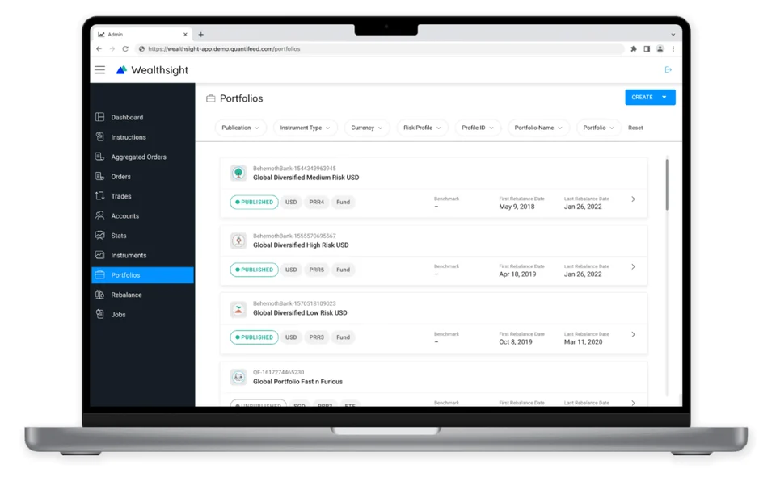
Portfolio manager systemI designed it, from wireframes to client demos
Financial advisor
“What do I show my client?”
Needs the allocation as a conversation aid.
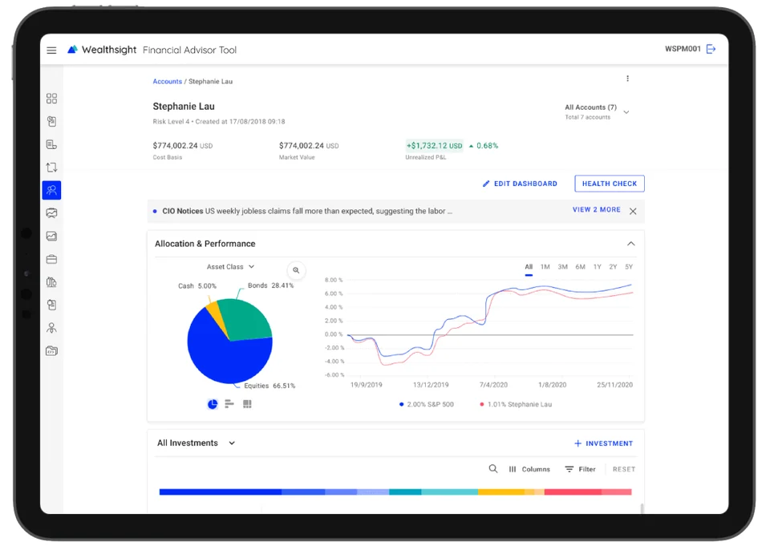
Advisor toolLater: I led the advisor-tool interviews (2022)
Individual investor
“Am I doing OK, and what can I change?”
Intuitive and simple beats complete.
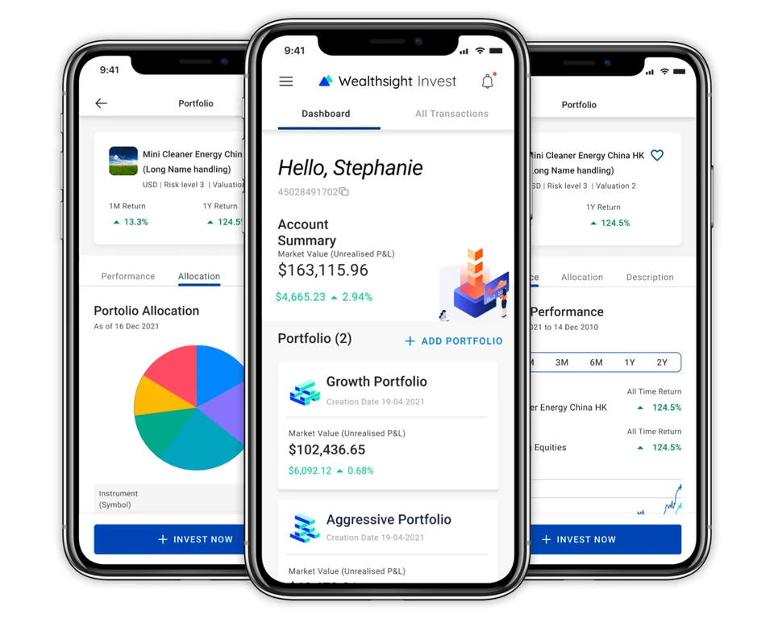
Investor appI facilitated design reviews
Three users, three questions, one dashboard pattern.
What each audience got, and gave up
Managers wanted depth, advisors wanted something to show a client, and investors wanted it simple. With one shared front-end library, all three had to share one layout.
Portfolio manager
WantedDepth across several dimensions.
GotFilters, sortable headers and extra columns on the holdings list.
Gave upCharts open on load. They’re collapsed to protect load time.
Financial advisor
WantedThe allocation, to talk a client through it.
GotAllocation and performance in the first fold.
Gave upProposals as a dashboard module. They now sit one tab away.
Individual investor
WantedSimple over complete.
GotA short default list and a calmer view with charts collapsed.
Gave upTransactions on the page. They’re in a tab, hidden by default.
My callOne layout with different defaults. Professionals add depth; the retail default stays short.
What everyone paysOne extra step to open charts, proposals or transactions.
Product audit & desktop research
Ten modules in, four in the first fold
In a workshop with the other two designers, we listed the modules competitors showed against what each product already had and what clients were asking for. Four of ten made the shared first fold; the rest moved to tabs or stayed product-specific. The full table is in the full process below.
CIO notices · one dismissible line
DashboardProposalsTransactions
1Account summary
2Allocation & performance
3Holdings list
1
Account summary
Totals, risk level, account selector — every audience opens asking “how much, and whose?”
2
Allocation & performance
Collapsed by default. Rendering charts for every account on load was a known performance risk; a calmer retail view came free.
3
Holdings list
Portfolios, stocks, ETFs, funds and structured notes in one list. Professionals add columns; the retail default stays short.
Moved to tabs
Proposals and transactions sit beside the dashboard — one step away for professionals, out of sight for retail by default.
Moved to a strip
CIO notices became one dismissible line instead of a module competing for the fold.
Five decisions in the shared first fold
12345
1
Accounts in the header BusinessOne client can hold several accounts. A single switcher sits beside the client’s totals.
2
One header, three tabs TechnologyDashboard, proposals and transactions share the header, and the dashboard can be customised.
3
Collapsible charts TechnologyAllocation and performance share one card that can collapse, so heavy charts don’t slow the page.
4
Mix before rows BusinessA colour bar shows each holding’s share of the account, matched to the stripe on its row.
5
Sort from the column UsersEvery column header sorts, and an arrow marks the active one.
Each tag names the pressure the decision answered: business needs, technical limits, or how people use the page.
Two fixes from the walkthrough
I ran a guerrilla walkthrough with 5 colleagues. They aren’t portfolio managers, but they catch basic usability issues, and that was enough to decide.
1
Hard-to-find account switcher
4 of 5 missed it
BeforeAccounts as a row of chips, lost in the page
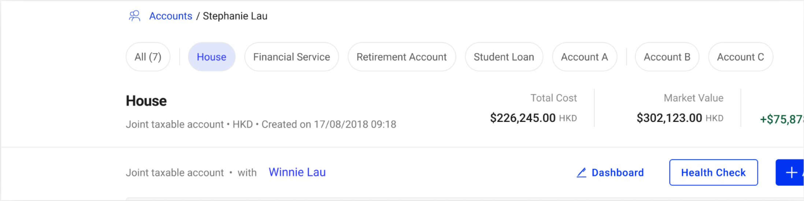
AfterOne accounts dropdown beside the totals
2
Hidden sorting
4 of 5 missed it
BeforeSort only from the toolbar’s “Sort by”
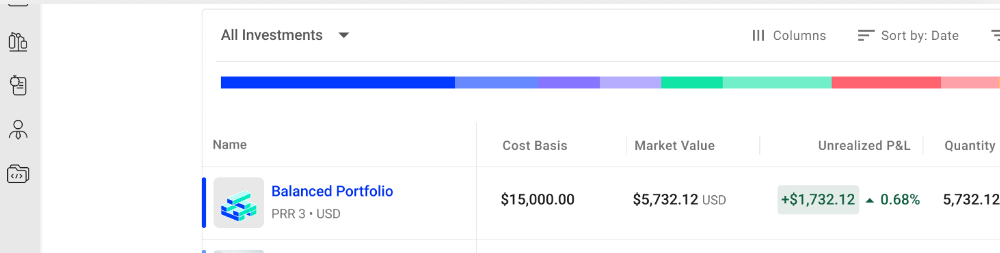
AfterEvery column header sorts; an arrow marks the active one
Full process: module audit, concept flow, layouts and prototype
The module audit from the workshop
Module
Advisor
Portfolio mgmt
Customer
New requests
Account summary
Yes
Yes
Yes
–
Holdings
Yes
Yes
Yes
Yes
Allocation
No
No
Yes
Yes
Performance over time
No
No
No
No
Filters
Yes
Yes
No
–
Top-performing holdings
No
No
No
Yes
Transactions
No
No
Yes
No
Proposals
Yes
No
No
No
CIO notices
Yes
No
Yes
Yes
Multiple accounts
No
No
No
Yes
Highlighted rows became the shared first fold. The rest moved to tabs or stayed product-specific.
Concept flow
Accounts listSearch and filter 780 accountsSelect an accountAccount dashboardSummary, charts, holdingsFrom here
Switch accountAll accounts, one account, or a joint account and its linked holder
Orders and tradesTabs that share the account header
CustomiseAdd or remove modules, such as orders and trades, on the dashboard
One layout, two widths
Desktop1440 pxSmall screen600–904 px
The same modules in the same order; only the summary stacks and the table drops secondary columns.
Try the dashboard prototype
Tap “User Account 1” to start; tap an empty spot to see what’s clickable. Open full screen ↗
Step 2 of 5 · Create a model portfolio
Making portfolio creation hard to get wrong
Portfolio managers build model portfolios here; banks recommend each one to clients with a matching risk score. I redesigned both ends: creating a portfolio (step 2), and comparing its metrics (step 3).
1Model portfolio list
2Create a portfolio Step 2
3Open its detail page
4Compare its metrics Step 3
Many linked compliance fields, with errors only at the end: internal staff got lost, and sales couldn’t demo it.
I reviewed the flow against Nielsen’s 10 heuristics and audited the platform, then interviewed the product owner and engineers to check the field logic heuristics can’t.
No required-field cue until submitVisibility of system status · error prevention · recognition over recall
Linked fields with no cue, only an error afterwardsError prevention
Locked fields that looked editable after creationRecognition over recall
A detail page that needed a long scrollAesthetic and minimalist design
One long form, then four steps
One long formEvery field on one page; required and linked fields only surfaced as errors on submit.Four steps with a stepperRequired fields marked, fields locked after creation flagged up front, and fees on their own step.
Two ways to group the view page
Proposal 1 · Shipped
Current vs draft
Basic information
Current portfolio
Composition
Performance
Draft
Draft vs current composition
Draft vs current performance
Close to the current interface
Less to relearn for existing users
More cluttered
Proposal 2
Performance vs composition
Basic information
Fees
Performance
Current
Draft
Composition
Current
Draft
Clear groups, no overlap
Common on fund pages
More to relearn for existing users
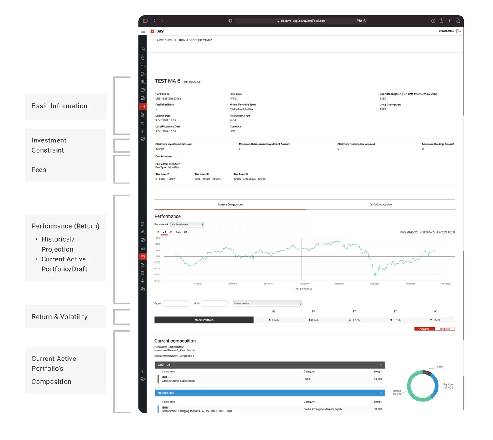
One long scroll became three tabs. Each composition tab carries its own performance view.Full process: annotated evaluation, audit, field map, benchmark and prototype
The heuristic evaluation, annotated
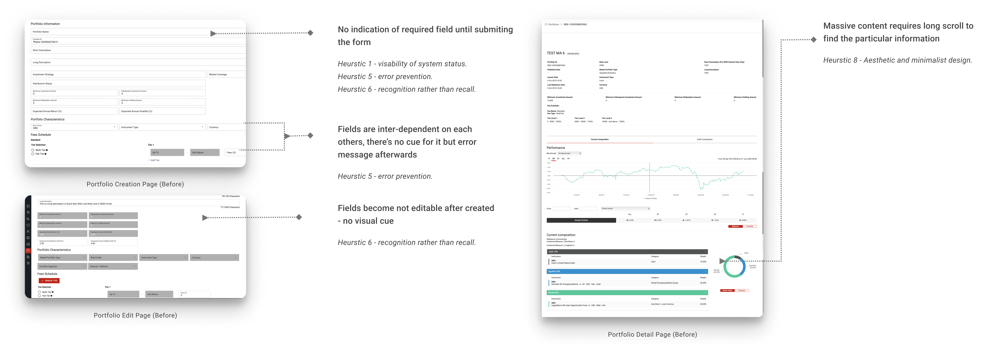
Audit, field map and benchmark
1 · AuditBreak down the current pageThe old view page split into the blocks managers read: basic information, constraints, fees, performance and composition.
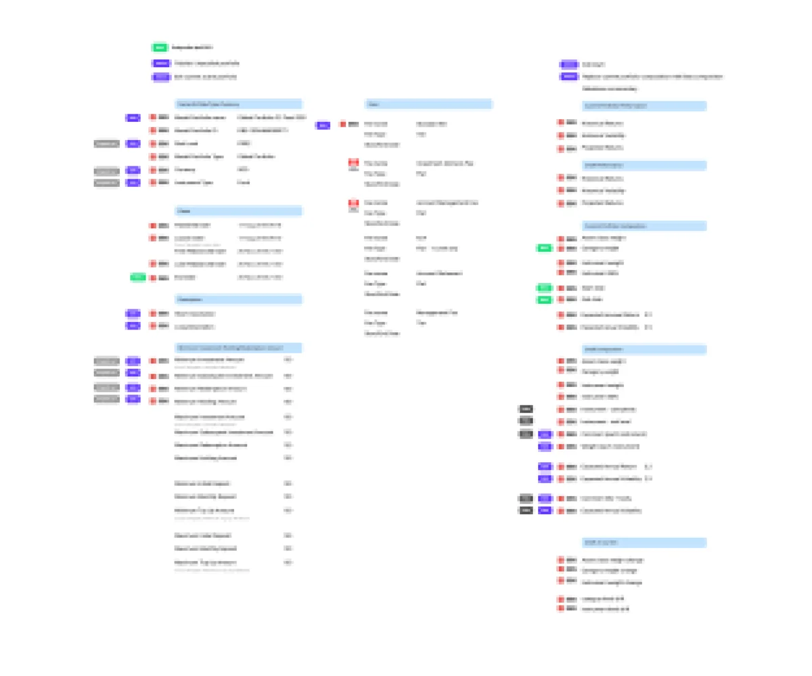
2 · MapList every fieldEvery field on the create and view pages, sorted into groups before any layout work.
Basic infoFeesPerformanceComposition+ secondary navigation3 · BenchmarkCompare 14 fund and portfolio pagesFrom BlackRock, Morningstar and Bloomberg to Goldman Sachs, HSBC and DBS. Most used the same four groups, with secondary navigation between them.
The regrouped view page follows the same groups: key facts and fees, composition, and performance.
Try the creation prototype
Tap “Create” to start, tap the form to fill in sample content, then “Next” through the four steps. Open full screen ↗
Step 3 of 5 · Metrics table
Four layouts tested, one clear winner
The detail page still needed a table that could compare portfolios and benchmarks across 4 metrics and 7 time periods.
Sole designer
Three yes/no choices, eight tables, four tested
Three yes/no choices give eight tables. I tested the four that answered the open questions: 7 colleagues, including the CEO, rated each from 1 to 5. They can judge how easy a table is to read, not which metrics managers need.
Option 13.3
No colour
Portfolios down the side
Tabs
Option 24.6
Colour-coded
Portfolios down the side
Tabs
Option 33.6
Colour-coded
Portfolios across the top
Tabs
Option 42.6
Colour-coded
Portfolios across the top
Dropdown
Average ease of comparison from 7 testers, rated 1 to 5.
Portfolios down the side feel like a spreadsheet, so it feels familiar.
Option 2
Names in one column match hovering over the line chart.
Option 2
The dropdown takes a lot of scrolling to reach the number I want.
Option 4
Notes from follow-up interviews, lightly edited.
3 of 5 follow-up interviewees compared Option 2 to their spreadsheets.
The same table thinking, in five modules
The other modules cover what happens after a manager decides to act. I redesigned them around a few dense-data patterns, so tables, filters and statuses behave the same everywhere.
See the five modules: model portfolios, instruments, rebalance, orders and trades
Scan before you choose. Each card shows what you need to pick a model — risk level, currency, benchmark, publish status — with publish and rebalance dates side by side so stale models stand out.
Edit in place, keep the original. Asset class edits in place with the original kept underneath, and ten filters narrow a long universe quickly.
Review the batch before acting. Weights before, after and the difference per instrument, with buys, sells and cash colour-coded, so a manager checks the whole batch before any order is created.
Status first, so exceptions stand out. Status sits next to the action, so failed orders stand out in a long list.
Filter and export for reconciliation. Reconciliation status and segment filters surface the trades that still need checking.
Step 4 of 5 · Design system
A design system written as rules, not just components
Colours missed WCAG contrast, type sizes had drifted, and design and front-end used different names for the same things. I led the rebuild of the library all three products shared, on a Material Design base; most of the work was agreeing with developers what to build first and what to call it.
Led the rebuild · 3 designers, 5 front-end engineers
Rule 1
Confirm only the irreversible; undo the rest
A confirmation box only when an action is irreversible, severe, complex and rare; everything else gets an undo toast.
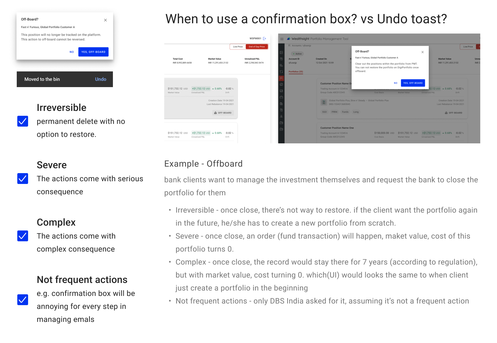
Off-boarding a client portfolio meets all four tests — it can’t be restored, it triggers a fund transaction, and the record stays for 7 years — so it gets a confirmation box.
Rule 2
One question per dialog
When a dialog is needed, its copy follows rules too, so dialogs read the same across all three products.
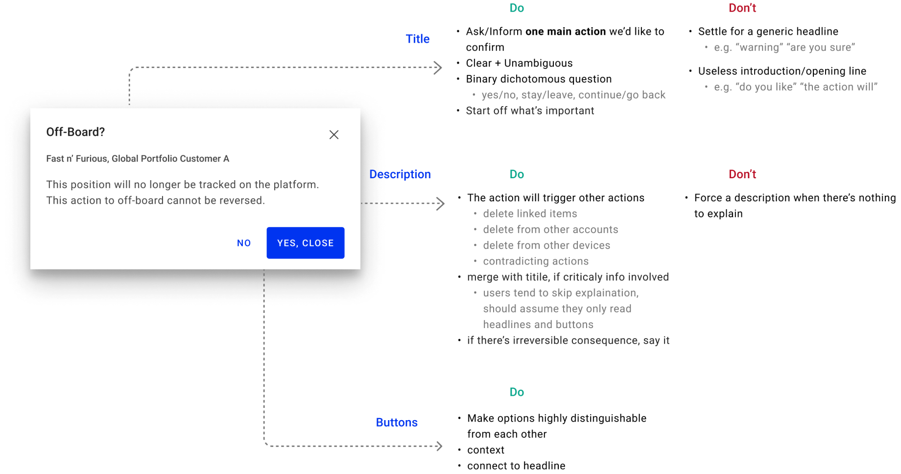
Dialog copy: one clear question in the title, consequences in the description, buttons that echo the title.
Where the rules came from: a dialog audit
Grouping every dialog by job showed developers how often the same pattern was being rebuilt, so dialogs became the first priority we agreed together.
Selection3 in the audit
Edit3 in the audit
Tooltip3 in the audit
Input2 in the audit
Upload1 in the audit
Confirmation3 in the audit
15 dialogs across the product, grouped by the job they do. One example per group.
More from the design system: style guide, components, grid and usage guide
Style guide: contrast, type and shared names
Colours fixed for WCAG contrast, type sizes tuned, and every style named the same in Figma and code. Updates went out in a monthly design × web meeting.
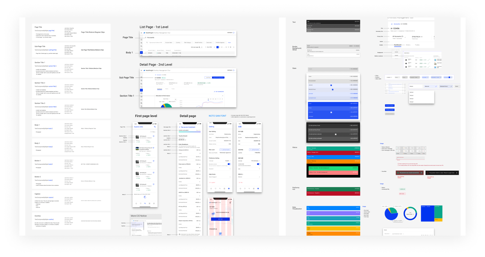
Type levels mapped to real list and detail pages, plus colours, statuses and the chart palette.
Shared components, not local copies
Modals, chips, breadcrumbs, scrollspy and snackbar, added where products kept building their own versions.
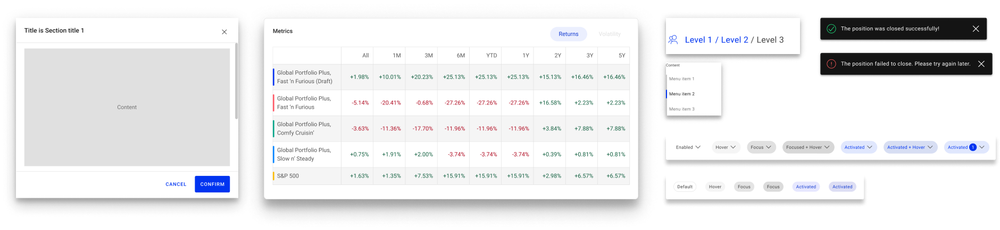
A grid built around task priority
A grid tailored to the platform’s layouts and task priority.
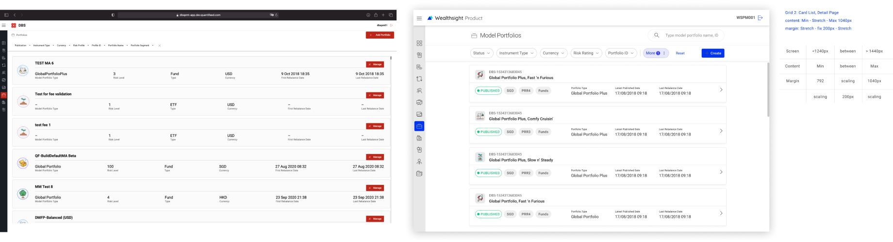
Reuse, adjust, then create
I ran structured workshops with developers and designers to agree goals and process, then wrote them up as a usage guide: reuse a component, adjust it, or create and document a new one.
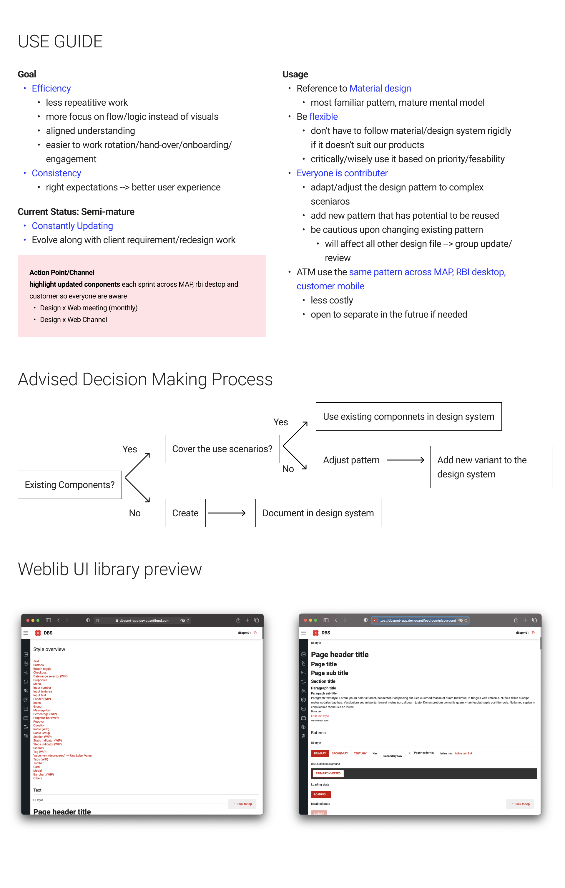
Goals, principles and the reuse → adjust → create decision path, with the live web UI library.Step 5 of 5 · Research mandate
Small tests earned research with real users
Research lead · with 1 PM
After the dashboard demo, the CEO asked me to plan research for a new advisor product and opened his network to recruit for it. With the PM, I interviewed 5 advisory directors, mostly from Swiss banks, and turned the findings into a journey map, pain points and a feature list; a prioritisation workshop and card sorting were planned, but I left before they ran.
Results and reflection
What the evidence earned
None of the evidence above was perfect, but each piece moved a decision, and together they changed how the CEO saw research.
Dashboard
A demo that helped win a client
Sales showed prospective clients the new dashboard and its new capabilities, and HSBC Hong Kong came on board.
Creation and metrics table
Signed off by the CEO
The CEO and product owner passed the creation flow in review, and the CEO backed the metrics layout after taking the test himself.
New product
Access to real users
The CEO asked me to plan research for a new advisor product, and opened his own network to recruit for it.
Reflection: the cheapest evidence first
What worked. At the start I felt stuck: asking for research went nowhere. Lean and guerrilla methods changed my question from “how do I get users?” to “what is the cheapest evidence for this decision?” Showing results, not asking for budget, is what got me real users.
The limit. None of these tests reached a portfolio manager. They settled whether screens were easy to use, not whether they fit a manager’s job, and nothing shipped with usage data to check.
What I’d measure with real access
Creation flow: how long it takes to create a model portfolio, and how long it takes to find key information on one that already exists.
Design system: how often each component is reused after an update, the time a consistent pattern saves per screen, and a short 1–5 rating from designers and developers on how well it supports their work, followed up with interviews.


 Deep dive
Create
Deep dive
Create
 Manage
Manage
 Monitor
Monitor


 Selection3 in the audit
Selection3 in the audit Edit3 in the audit
Edit3 in the audit Tooltip3 in the audit
Tooltip3 in the audit Input2 in the audit
Input2 in the audit Upload1 in the audit
Upload1 in the audit Confirmation3 in the audit
Confirmation3 in the audit